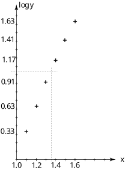

Long description: workbook6block5fig1

Alt text: A scatter plot displays points suggesting a linear relationship between the logarithm of x and the logarithm of y.
This description was generated by AI and has not been verified by a human. If you spot an error, please use the feedback link below.
- The horizontal axis is labeled "x" and appears to range from 1.0 to at least 2.0.
- The vertical axis is labeled "log y" and has markings that include 0.33, 0.63, 0.91, 1.17, and 1.41.
- Several data points are plotted on the graph, indicated by plus signs.
- A point is visible near x = 1.0 and log y = 0.33.
- A second point is plotted at an x-value slightly greater than 1.2, with a corresponding log y value of approximately 0.63.
- A third point is located at an x-value near 1.4, corresponding to a log y value of approximately 0.91.
- A fourth point is shown at an x-value slightly greater than 1.4, with a log y value around 1.17.
- The highest visible point is located at an x-value near 1.6, with the corresponding log y value being approximately 1.63.
- A vertical dashed line is drawn at an x-value of 1.4, and a horizontal dashed line is drawn at a log y value of 0.91, intersecting at a plotted point.